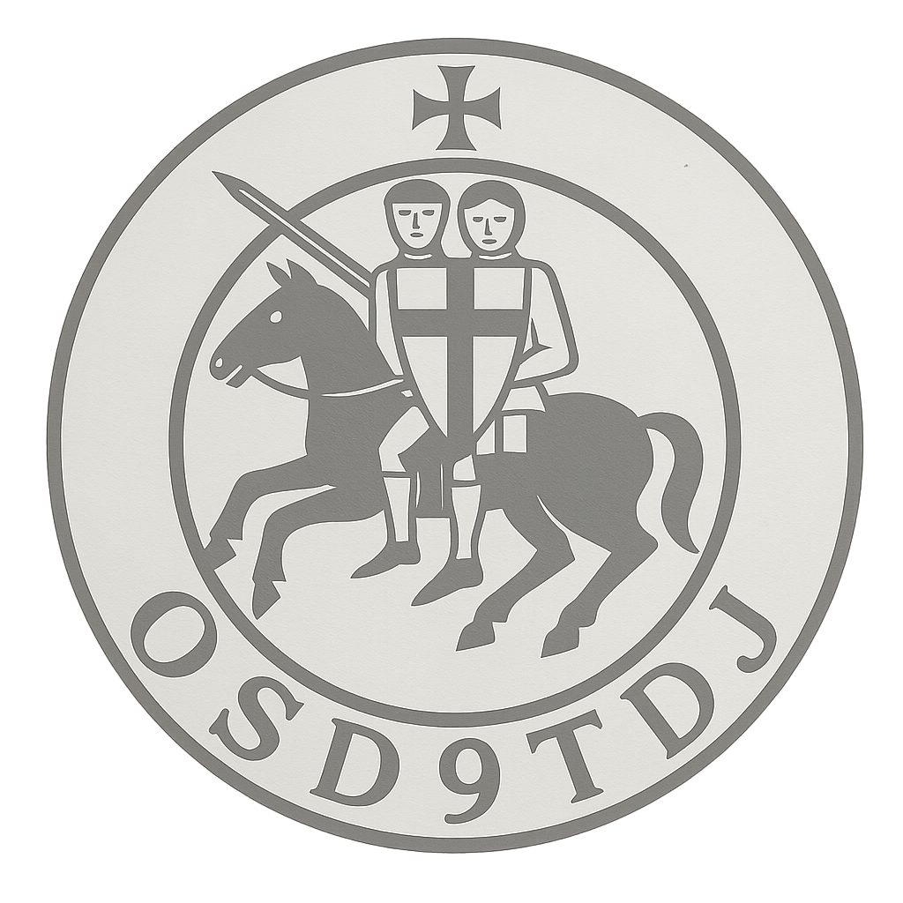

Foire aux questions (FAQ)
Cette page répond, sans ambiguïté, aux questions les plus fréquentes sur l’O.S.D.9.T.D.J. Elle clarifie ce que nous sommes, ce que nous ne sommes pas, et pourquoi certains repères peuvent rappeler d’autres traditions. Notre ligne est simple : association laïque, indépendante, fondée sur l’étude, l’éthique, la fraternité et le service.
Cadre et identité
❓ Qu’est-ce que l’Ordre Sacré des Neuf Templiers de Jérusalem (O.S.D.9.T.D.J.) ?
Notre objectif : transmettre des valeurs, développer une pédagogie, organiser des activités culturelles et solidaires, et travailler la mémoire templière avec sérieux : histoire, symbolique, héritages et transmission.
❓ Êtes-vous une Église, un culte ou une organisation religieuse ?
❓ Pourquoi certains repères peuvent “ressembler” à la franc-maçonnerie, au spirituel, ou à d’autres traditions ?
- Nous étudions l’histoire, le symbolisme et les héritages, dont la mémoire templière.
- Nous étudions aussi ce que ces courants sont devenus : évolutions, transmissions, usages contemporains.
- Cette démarche est culturelle : elle ne crée ni autorité spirituelle, ni culte.
❓ Êtes-vous une obédience ou un mouvement de type franc-maçonnerie ?
Spiritualités, appartenances et compatibilité
❓ Peut-on être croyant, pratiquant, ou appartenir à une Église, une spiritualité, une fraternité maçonnique, rose-croix, hermétique, mystique, etc. ?
Cela est possible si et seulement si :
- c’est compatible avec les règles internes de l’autre structure ;
- il n’existe aucun conflit de loyauté ou de représentation ;
- le membre ne vient pas “au nom” d’une autre structure et n’essaie pas de l’imposer à l’association ;
- la laïcité et l’indépendance de l’O.S.D.9.T.D.J. sont respectées.
❓ Le “spirituel templier” se pratique-t-il dans l’association ?
Les questions religieuses relèvent, en France, d’un cadre spécifique, distinct du fonctionnement associatif loi 1901 qui est le nôtre. Chaque membre est libre d’avoir sa propre religion, sa pratique, ou aucune, et cette liberté est respectée.
❓ Êtes-vous “nobles” ou un ordre aristocratique ? Délivrez-vous des titres ?
Initiation, travaux et contenus
❓ Parlez-vous d’initiation ?
Il ne s’agit ni d’ésotérisme occulte, ni de pratiques religieuses, ni de “savoirs secrets” réservés.
❓ Y a-t-il des contenus réservés aux membres ?
Il n’existe toutefois aucun enseignement caché, aucune “révélation dissimulée” et aucune pratique occulte. La progression suit une logique de pédagogie et de méthode, non une logique de secret.
❓ Existe-t-il une hiérarchie ?
Il n’existe cependant aucune autorité spirituelle absolue.
Disponibilité, réunions et actions
❓ Quelle disponibilité est attendue ?
En pratique, généralement, les membres se regroupent 2 à 3 heures environ tous les 15 jours, selon les commanderies, les périodes et les projets.
Des événements majeurs, culturels, commémoratifs, fraternels, et des actions caritatives ou solidaires peuvent demander une présence ponctuelle et une organisation plus dense : préparation, logistique, communication, encadrement.
L’engagement se fait dans le respect des responsabilités prises : chacun reste libre, mais la cohérence collective suppose de la fiabilité et un minimum de présence.
❓ Quelles activités et quels projets peuvent exister ?
- réunions d’étude : histoire templière, symbolique, éthique, héritages ;
- ateliers pédagogiques et transmissions : méthode, valeurs, culture générale ;
- organisation d’événements : rencontres, conférences, commémorations, partenariats culturels ;
- actions caritatives et solidaires ;
- projets de structuration : création d’outils, écoles internes, ateliers, supports pédagogiques, dans un cadre associatif laïque.
Clarté, liberté et prévention des confusions
❓ Êtes-vous une secte ?
- adhésion volontaire et départ libre ;
- responsabilités définies, Assemblée Générale, organisation structurée ;
- pas d’autorité spirituelle absolue, pas d’emprise, pas d’obligation sociale ;
- cotisations affectées au fonctionnement et aux activités associatives.
❓ Peut-on quitter librement l’association ?
❓ Êtes-vous politiques ?
Histoire et mémoire templière
❓ Revendiquez-vous une filiation avec les Templiers historiques ?
Nous privilégions l’authenticité : pas de faux documents, pas de filiations inventées, pas de titres usurpés.
❓ Pourquoi être aussi clairs ?
Une association sérieuse ne se définit pas par des zones grises, mais par un cadre lisible, des règles connues, une liberté réelle des membres, et une éthique de responsabilité.
Informations utiles
❓ Où trouver les informations officielles (cadre légal, RGPD, propriété intellectuelle) ?
- Informations officielles : cadre légal, propriété intellectuelle, RGPD, cookies techniques ;
- Statuts : fonctionnement, cadre, responsabilités ;
- Contact : question spécifique, adhésion, relations.
Cette FAQ a pour vocation d’apporter des réponses lisibles, publiques et assumées sur la nature de l’O.S.D.9.T.D.J., son cadre juridique, ses valeurs, ses méthodes, ses libertés internes et la manière dont il se situe par rapport aux traditions religieuses, spirituelles, maçonniques ou chevaleresques. Elle participe à une politique de clarté, de prévention des contresens et de transparence associative.